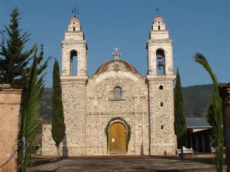
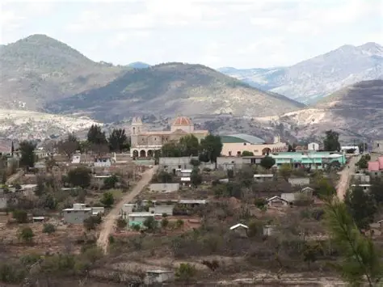
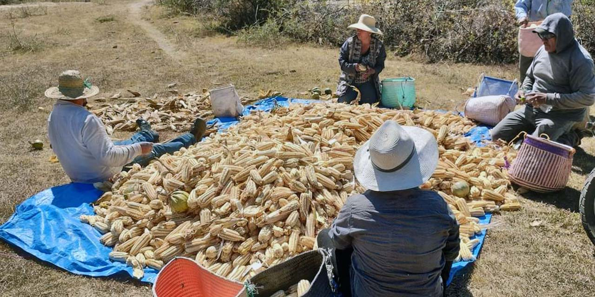

Bachillerato Integral Comunitario de San Agustín Tlacotepec

El pueblo participó en la Revolución apoyando a los zapatistas, como también ha pasado por varios asentamientos; primero, se dice que este municipio se ubicó en el paraje denominado Nucuiti, después por alguna razón ocuparon otro lugar denominado Xiquityoo, volviéndose así pues a reubicarseen el lugar que lleva por nombre Tixi, hasta la fecha se encuentran asentamientos humanos; por último, el lugar en el que hoy los habitantes de San Agustín Tlacotepec se encuentran asentados.


Cultura y Tradiciones san agustin tlacotepec San Agustín Tlacotepec es un pueblo que ha mantenido viva su rica tradición cultural a lo largo de los años. La comunidad celebra su fiesta patronal con una serie de actividades que incluyen danzas, música y expresiones culturales. Entre las tradiciones más destacadas se encuentran las danzas de los mascareros de las bodas, moros y cristianos, la conquista de México, los indios, diablos y la danza de la comida. Estas expresiones son conservadas por las comunidades y transmitidas de generación en generación, reflejando la herencia cultural de Tlacotepec. La fiesta patronal se lleva a cabo en honor a San Agustín Obispo y se celebra del 26 al 29 de agosto. Durante este tiempo, se presentan danzas y música que representan la historia y la identidad de la comunidad. Además, se realizan encuentros de bandas filarmónicas y participaciones de grupos folklóricos, lo que convierte a San Agustín Tlacotepec en un lugar de gran interés para los visitantes y los amantes de la cultura. San Agustín Tlacotepec es un ejemplo de cómo la cultura y las tradiciones pueden ser preservadas y transmitidas a través de la participación activa de la comunidad. La celebración de su fiesta patronal es un momento especial que refleja la riqueza cultural del pueblo y su compromiso con la conservación de su patrimonio.

Las principales actividades económicas que se realizan en el municipio en referencia son la agricultura, caracterizado por los cultivos de maíz y frijol; la ganadería por la crianza de ganado caprino y vacuno; en lo referente al comercio se ofertan petates, tenates, sombreros de ixtle, palma y pirotécnicos. Para la caracterización de este eje se utilizó la dinámica nuestras vidas en el año y las estrategias de producción, encontrándose que los meses con mayor factor de riesgo para los habitantes del municipio de San Agustín Tlacotepec son: diciembre, febrero, marzo y abril en los que consideran que el calor es intenso, hay vientos muy fuertes y heladas que afectan principalmente a los meses de diciembre, enero y febrero, dada su intensidad. Contrario a los meses de mayo, junio, julio, agosto, septiembre, octubre, noviembre y algunos días de diciembre se consideran de buenos a regulares, porque las familias de este municipio practican el cultivo de maíz, la siembra de este cultivo lo realizan entre mayo y junio, cuando ocurren las primeras lluvias, y la siembra del cultivo del frijol durante el mes de julio, también consideran que los meses comprendidos entre agosto a octubre son buenos, debidos a las intensas lluvias y al calor moderado permiten el crecimiento de los cultivos, además consideran buenos los meses que comprenden los últimos días de agosto, el mes de noviembre y los primeros días de diciembre ya que durante este tiempo se realiza la cosecha de los cultivos.


El pueblo de San Agustín Tlacotepec, se localiza en la latitud norte a 17o12’ y longitud oeste a 97o31’, a una altura sobre el nivel del marde 2,030 metros. La extensión territorial del municipio es de 79.10 km2. Se caracteriza por tener lomas y además cuenta con una cordillera de cerros que se encuentran en el oriente. Este municipio cuenta con varios ríos, los cuales de alguna manera son aprovechados en forma rústica, siendo este el río Yosocahua. También se cuenta con manantiales y pozos pequeños.


En el municipio de San Agustín Tlacotepec, de acuerdo a los datos proporcionados por la Unidad Médica Rural IMSS- OPORTUNIDADES se cuenta con un total de 880 habitantes, de los cuales 413 son hombres, que representa el 47% de la población y 467 son mujeres, que representa el 53%. En la figura 6 se observa la estructura quinquenal por sexo, en donde se puede apreciar que la población no presenta un desarrollo significativo sino que se mantiene estable